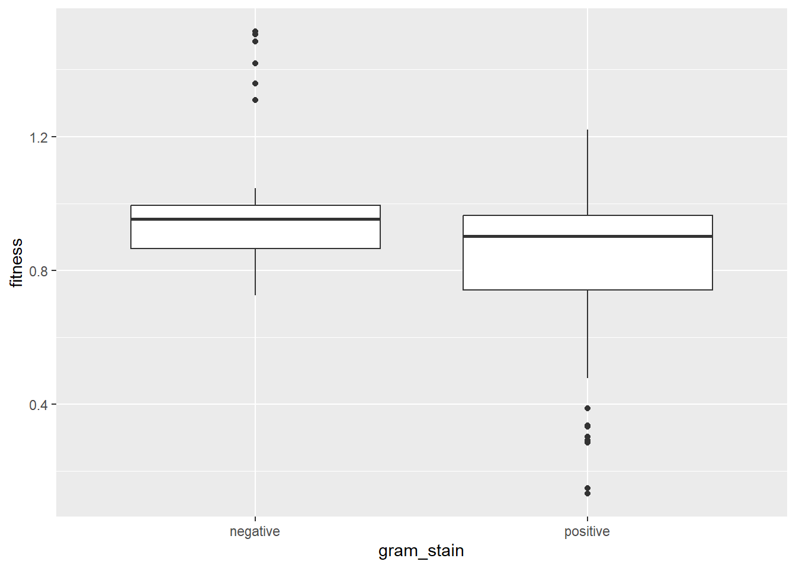

Chapter 10 Analysis of Staphycococcal aureus.
The cell wall is an important target of mutations that confer antibiotic resistance. The bacterial cell wall is built with alternating monomers of N-Acetylglucosamine and n-Acetylmuramic acid forming the peptidoglycan of the cell wall. Staphycococcus aureus and other gram positive organisms have a much greater amount of peptidoglycan in the cell wall. This biochemical difference in cell wall structure suggests that there could be a significant difference in fitness costs between gram positive and gram negative organisms.
| Differences in fitness based on gram stain | |||||
| Gram stain | Mean Fitness | Interquantile Range | Minimum | Maximum | Standard Deviation |
|---|---|---|---|---|---|
| negative | 0.9733961 | 0.1294500 | 0.725 | 1.5134 | 0.1678243 |
| positive | 0.8224603 | 0.2226997 | 0.133 | 1.2200 | 0.2154585 |
## # A tibble: 2 × 6
## gram_stain mean_fitness IQR Minumum Maximum Standard_deviation
## <chr> <dbl> <dbl> <dbl> <dbl> <dbl>
## 1 negative 0.973 0.129 0.725 1.51 0.168
## 2 positive 0.822 0.223 0.133 1.22 0.215Gram-positive bacteria had a significantly greater fitness costs associated with resistance mutations (mean fitness = 0.822) when compared with Gram-negative bacteria (mean fitness = 0.973). Caution must be used in interpreting this result because there were a greater number of Gram-negative than Gram-positive bacteria in the data set.

A boxplot of fitness between gram + and gram - organisms does not show much of a difference between the two groups.